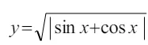
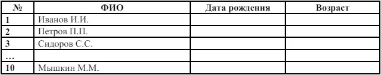
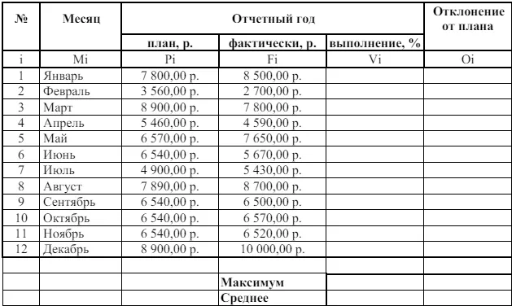

Задание для обучения MS Excel №2
Тема: Использование встроенных функций и операций ЭТ
Цель:получить практические навыки работы в программе Ms Excel, вводить и редактировать стандартные функции ЭТ
Ход работы:
Задание № 1
1. Протабулировать функцию

на промежутке [0,..10] с шагом 0,2.
2. Вычисления оформить в виде таблицы, отформатировать ее с помощью автоформата и сделать заголовок к таблице.
3. Рабочий лист назвать Функция.
4. Сохранить работу в файле Практичекая работа 2.
Задание № 2
- Перейти на новый рабочий лист и назвать его Возраст.
- Создать список из 10 фамилий и инициалов.
- Внести его в таблицу с помощью автозаполнения.
- Занести в таблицу даты рождения
- В столбце Возраст вычислить возраст этих людей с помощью функций СЕГОДНЯ ГОД
- Отформатировать таблицу
- Сделать заголовок к таблице «Вычисление возраста»

Задание № 3
- Откройте файл с Практической работой 1, перейдите на лист Ведомость.
- В эту таблицу добавьте снизу ячейки по образцу и выполните соответствующие вычисления. (Используйте статистические функции МАКС и СРЗНАЧ)
